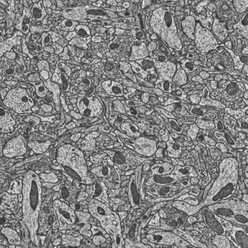

Slice a tiny block of brain, image every slice, then reconstruct a neuron. Drag to turn it.

Real data from the MICrONS pinky dataset. The block is 10 × 10 × 8 µm of electron microscope imagery around one of this cell's dendrites, each section 40 nm thick, with the segmentation colored in. The neuron is pyramidal cell 648518346355727683, reconstructed in 3D and drawn at true scale inside the outline of the whole imaged volume.